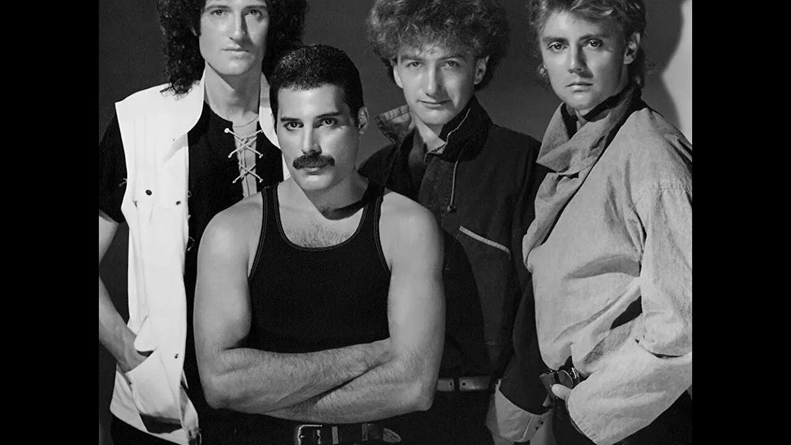
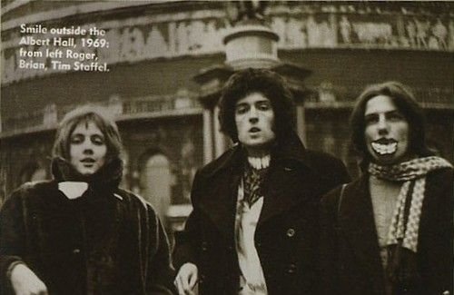
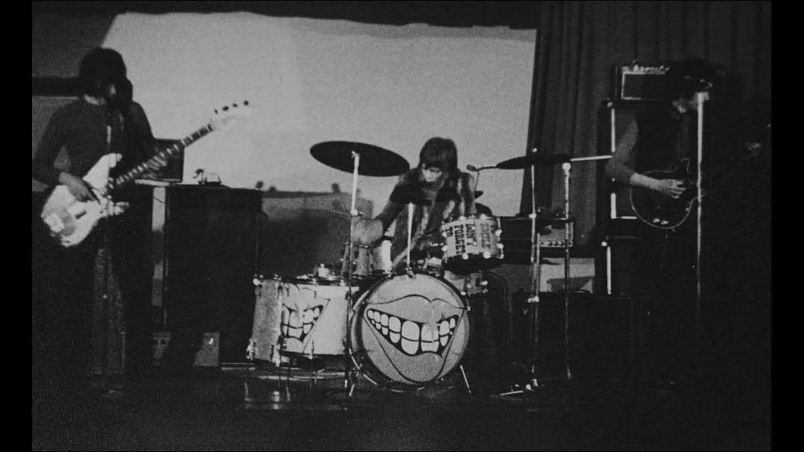
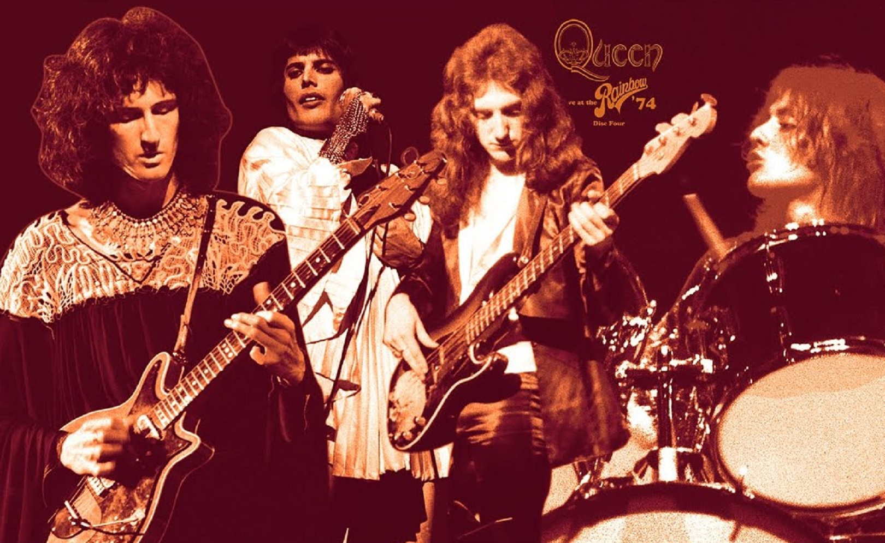
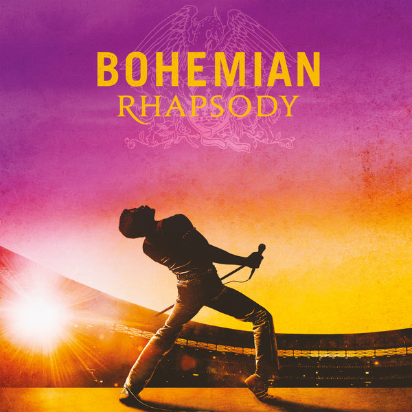
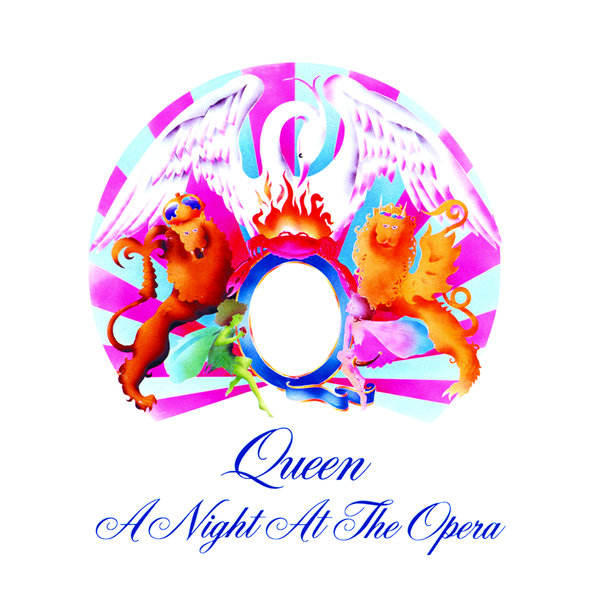

.png)
История
"История группы Queen — это яркий путь от студенческой группы до статуса легенд рока"

Первые шаги
В 1968 году гитарист Брайан Мэй и будущий вокалист Тим Стаффел создали группу Smile
Вскоре к ним присоединился барабанщик Роджер Тейлор, откликнувшийся на объявление в колледже

В 1970 году Стаффел покинул коллектив, и друзья пригласили на его место его соседа —
харизматичного Фарруха Булсару(Фредди Меркьюри), который обожал творчество Smile
Именно он предложил название "Queen" для группы

Группа никак не могла подписать контракт и их спасением стали ночные смены в De Lane Lea
Первые Концерты
Ранние концерты Queen представляли собой смесь рок-н-ролльных стандартов, каверов Rolling Stones и первых оригинальных песен
- Первый крупный тур состоялся по Великобритании в 1973 году
- В чартах группа получила известность с альбомом Queen Ⅱ в 1974 году
- Мировое признание появилось у Queen после альбома Sheer Heart Attack, с хитом Killer Queen
Вот некоторые факты о первых успехах

Золотой состав
В тот момент и до конца её существования в группе состояли
Фредди Меркьюри, Брайан Мэй, Роджер Тейлор и Джон Дикон
Этот период считается вершиной творчества Queen, когда они из просто популярной группы превратились в «королей» стадионного рока
Фурором стал сингл Bohemian Rapsody и альбом A Night at the Opera


После выхода песен "We Will Rock You" и "We Are the Champions" ни одна спортивная игра не обходилась без этих произведений
После выхода альбома The Game, мир получил мега-хит Another One Bites the Dust
Последним аккордом золотого состава стал турне 1986 года